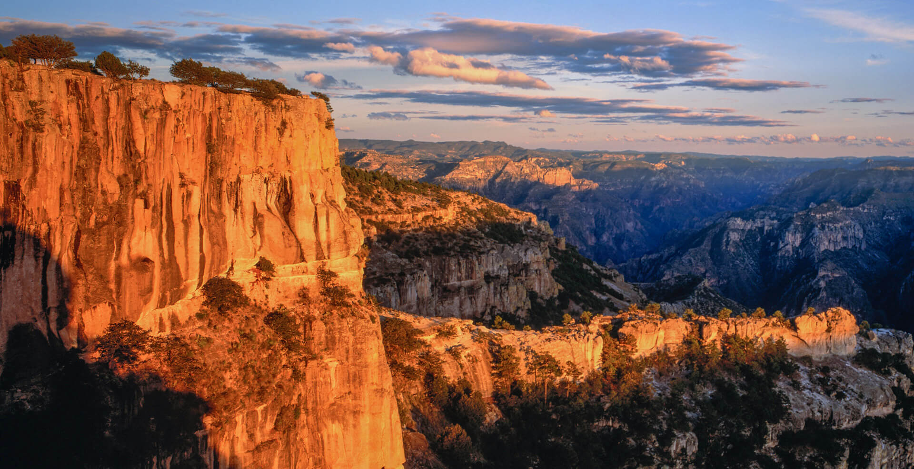

Las Barrancas del Cobre son un impresionante sistema de cañones ubicado en la Sierra Tarahumara, en el estado de Chihuahua, al norte de México. Este conjunto está formado por varias barrancas, entre ellas Urique, Sinforosa, Batopilas y Candameña, y en conjunto es más extenso y profundo que el Gran Cañón de Estados Unidos.

